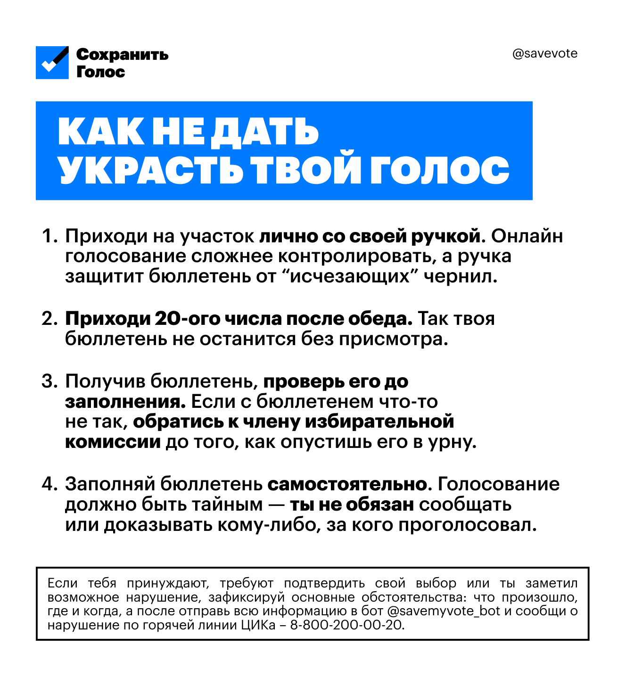

Твой выбор имеет значение
Сохрани
свой голос.
Несколько простых действий помогут сделать голосование спокойным, личным и честным.
Как защитить голосКороткая памятка
Пять шагов
против Единой России.
-
01
Приди лично
На участке ты сам контролируешь процесс. Возьми свою ручку — это дополнительно защитит бюллетень.
-
02
Приходи в последний день
Приходи 20 сентября после обеда – так биллютень не останется на обед или ночь без присмотра.
-
03
Голосуй за любую партию кроме ЕР.
Тк Яблоко сняли с выборов, остается только голосовать ЗА ЛЮБУЮ ПАРТИЮ КРОМЕ ЕДИНОЙ РОССИИ.
-
04
Проверь бюллетень
Сделай это до заполнения. Если что-то не так, обратись к члену избирательной комиссии, прежде чем опустить его в урну.
-
05
Голосуй самостоятельно
Голосование тайное. Ты не обязан сообщать или доказывать кому-либо, за кого проголосовал.
избирательный участок 01 Адрес участка 02 Номер УИК 03 Часы работы ↗
Совместная гражданская акция · 20 сентября 2026
Полдень
за мир
Приходите голосовать после 12:00.
«Полдень за мирную Россию» — гражданская инициатива для тех, кто хочет мирно и публично выразить антивоенную позицию: прийти на участок одновременно с другими людьми и проголосовать по собственному выбору.
Подробнее об инициативеПолезный инструмент
Галочка
поможет.
Инструменты для тех, кого лишают выбора.
На сайте «Галочки» можно узнать, как безопасно зафиксировать давление и сохранить право голосовать самостоятельно.
Перейти на сайтПоддержка проекта
Помогите
сохранить голос.
«Сохранить голос» — дочерний независимый медиапроект Центра Ц. Ваша поддержка помогает нам продолжать работу.
Поддержать нашу работуКороткие ответы
Есть
вопросы?
Нужно ли голосовать за кого-то конкретного?
Нет. Эта памятка не агитирует за кандидатов или партии: решение о голосе каждый принимает самостоятельно.
Что делать, если меня принуждают?
По возможности зафиксируйте, что произошло, где и когда. Сообщить о ситуации можно через наш бот или по горячей линии ЦИК, указанные ниже.
Можно ли прийти позже 12:00?
Да. Время после 12:00 — ориентир акции; приходите в часы работы своего участка и голосуйте в удобное для вас время.
Нужно ли показывать свой бюллетень?
Нет. Голосование тайное, и вы не обязаны сообщать или доказывать кому-либо свой выбор.
Если заметил нарушение
Зафиксируй.
Сообщи.
Запиши, что произошло, где и когда. Если тебя принуждают подтвердить свой выбор или ты заметил возможное нарушение, сохрани основные обстоятельства.
Сохрани и поделись
Памятка
в одном кадре
Отправь её близким, чтобы важные правила всегда были под рукой.
Скачать памятку{kind=link}
